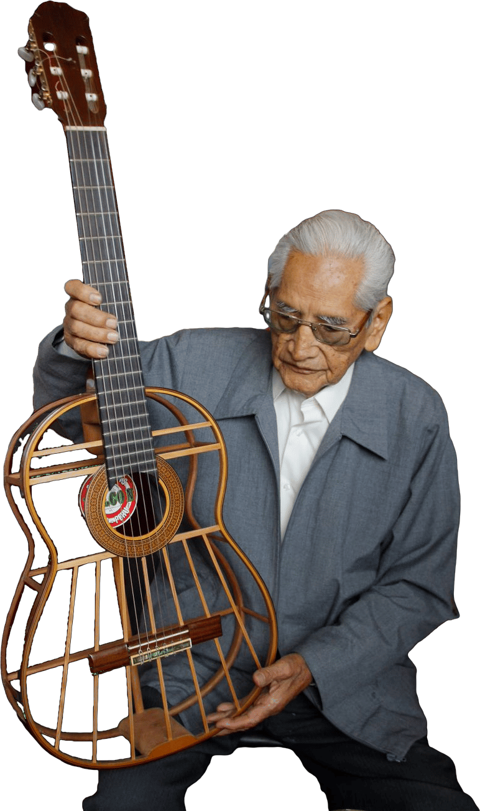
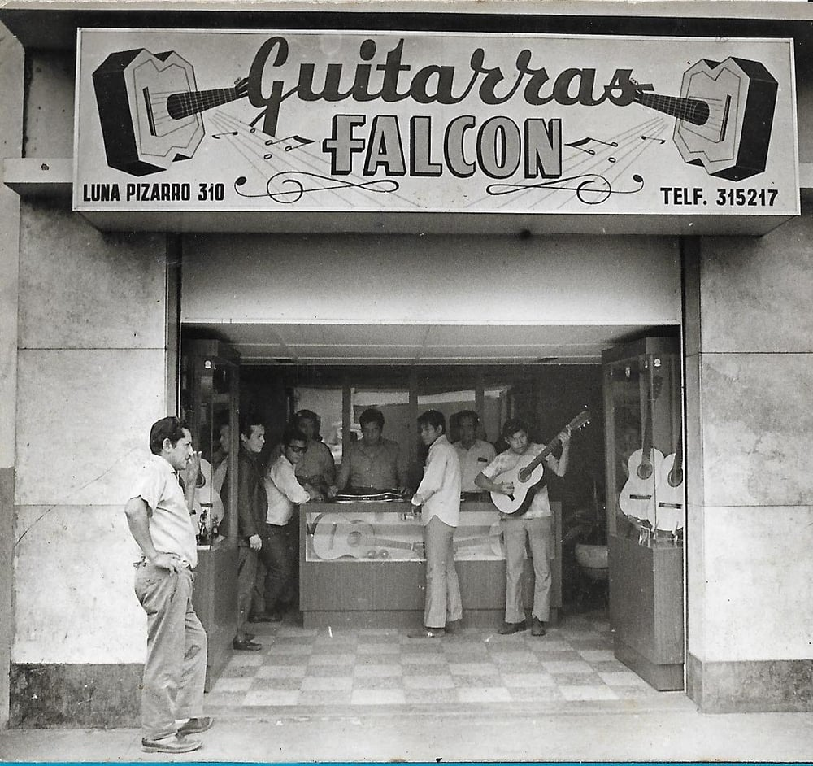
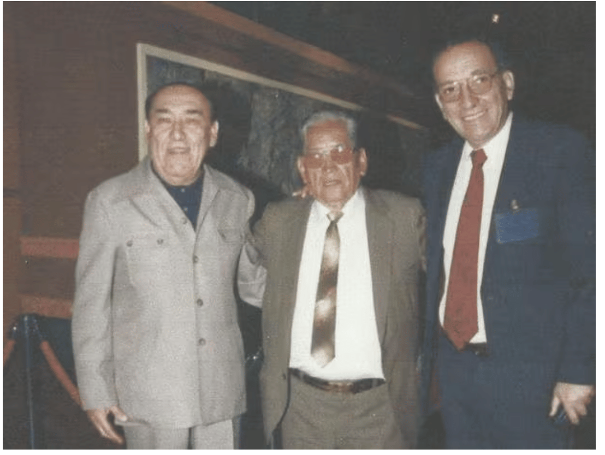
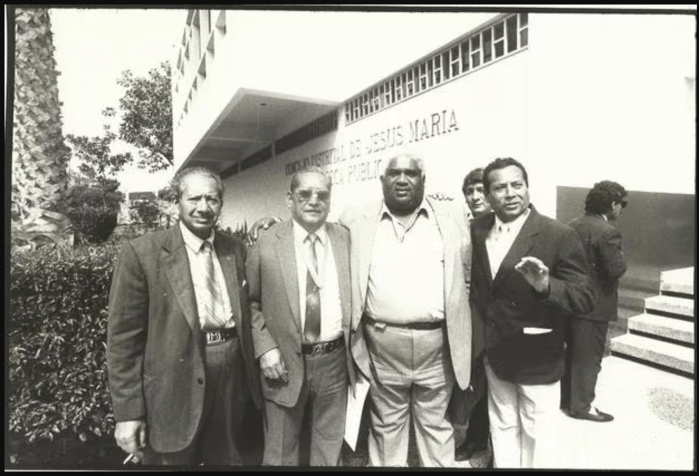
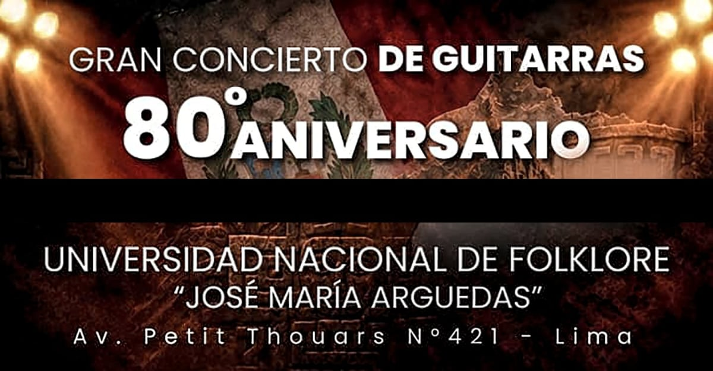
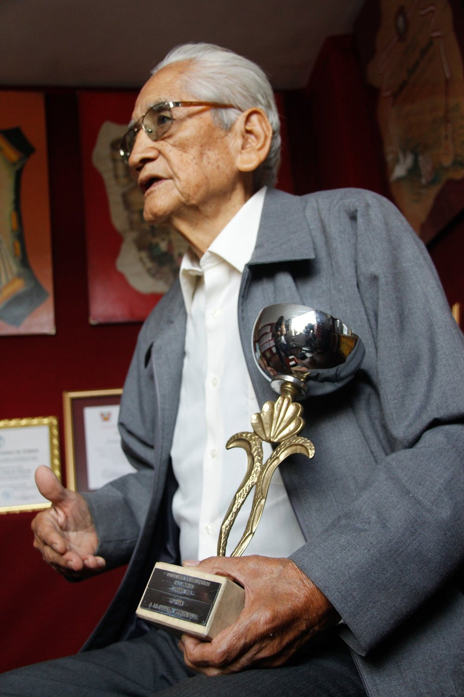

1946
Nace la primera guitarra Falcón
A orillas del río Palpa (Ica), Abraham Falcón —aconsejado por su primo Arquímedes Noriega— da forma a su primera guitarra a partir de un tronco local.
Archivo familiar · 1946 — hoy
De un tronco recogido a orillas del río Palpa a un modelo reconocido en Europa. Tres generaciones, una misma obsesión: que la guitarra peruana suene profunda, penetrante y con voz propia.

Los orígenes
A mediados de la década de 1940, por la escasez del trabajo de campo, don Abraham buscó comenzar un oficio. Un primo suyo músico, Arquímedes Noriega, le dio un consejo que le cambiaría la vida.
Abraham Falcón no supo bien qué responder, pero Arquímedes insistió: después de todo, él había visitado muchos talleres y había visto cómo se reparaban las viejas guitarras de origen extranjero. Así, a orillas del río Palpa, recogieron un tronco que llevaron al improvisado taller y, tras aserrarlo y cortarlo muchas veces, le dieron forma de instrumento. Era 1946 y había nacido la primera guitarra Falcón.
No había plan de negocio. No había catálogo ni ferias. Solo el oído de un hombre que quería que la guitarra sonara tan profundo como la música de su tierra.

Local en 1965
Archivo familiarPalpa → Ica → Lima
Por entonces, la única referencia eran las antiguas guitarras españolas de doce cuerdas —Ribot o Ramírez— que venían de Arequipa, y que don Abraham comenzó a copiar en maderas de pianos viejos.
De Palpa se mudó a Ica, donde comenzó a hacerse conocido. Allí descubrió que las guitarras europeas, aunque finas, eran frágiles y de sonido poco profundo. Decidió hacerlas capaces de emitir sonidos penetrantes como los que había escuchado en su Coracora natal. Músicos como el Jilguero del Huascarán popularizaron las guitarras Falcón, que después fueron apreciadas por grandes exponentes ayacuchanos como Raúl García Zárate o Manuelcha Prado.
El salto a Lima fue el punto de inflexión. La guitarra dejó de ser un instrumento de pueblo para convertirse en la voz de la peña, la jarana y el vals criollo.
Vida en Lima
Entonces se produjo el salto a la capital. Abraham Falcón montó un pequeño taller en La Victoria hasta que logró abrir el taller de Luna Pizarro, donde sus guitarras sirvieron a las peñas y jaranas criollas de Barrios Altos, El Rímac y La Victoria.
«La verdad, pegó muy bien, porque en esa época, entre los años 60 y 70, había un boom de la canción criolla, había un contexto muy bueno, y eso ayudó mucho a que la gente conociera la guitarra criolla, la guitarra costeña.»
Son las historias que cuentan en la familia, y la prueba está en fotografías en blanco y negro en donde don Abraham aparece con Arturo «Zambo» Cavero, con Óscar Avilés, con Porfirio Vásquez, con Humberto Pimentel, con el trío Los Chamas, con Pepe Villalobos.
El taller no era solo un lugar de trabajo: era un punto de encuentro. Los músicos llegaban a probar, a pedir una reparación, a conversar. De esas visitas nacieron las guitarras que hoy son leyenda.

Con Zambo CaveroCronología
A orillas del río Palpa (Ica), Abraham Falcón —aconsejado por su primo Arquímedes Noriega— da forma a su primera guitarra a partir de un tronco local.
Tras mudarse a Ica, don Abraham se distancia de la fragilidad de las guitarras europeas y empieza a construir instrumentos de sonido penetrante, inspirado en su Coracora natal.
El taller de Luna Pizarro se convierte en punto de encuentro de la guitarra criolla. Peñas de Barrios Altos, jaranas del Rímac y la escena de La Victoria adoptan el sonido Falcón.
Abraham Falcón es invitado en tres ocasiones a encuentros de lutiería en Francia, donde se reconoce «el modelo peruano» por sus cualidades estéticas y sonoras. Entre los hitos de esta etapa está el reconocimiento obtenido en 1987.
Desde fines de los años 90, el oficio se transmite a sus hijos —tuvo siete, hoy quedan cinco—. El taller resiste la crisis del terrorismo y la inflación, que redujeron las fiestas y la venta de instrumentos.
El 20 de agosto, la «Innovación Estructural para la Guitarra Peruana Clásica de Concierto» queda registrada en INDECOPI (Resolución N.º 014132-2009). Las espinetas en abanico parten de la barra armónica central y concluyen en las cintas de amarre.
Su último legado de vida fue dar charlas sobre el arte de hacer instrumentos, hasta que el 2 de diciembre nos dio el definitivo adiós. Nunca aprendió a tocar, pero sabía afinar a la perfección.
Enrique Falcón y la nueva generación —Enrique Jr. Falcón— continúan el oficio en Luna Pizarro 310. La marca ha superado la crisis de los 80 y la pandemia, y sigue construyendo la guitarra peruana a mano.

El tallerEl maestro
Don Abraham nunca aprendió a tocar. Eso sí: sabía afinar a la perfección. Perdió la audición de joven en uno de sus oídos, pero eso no le impidió ser un gran aportante a la música peruana.
Desde el lado de la construcción de instrumentos musicales, su trabajo consolidó ese sonido criollo que se ha asentado por más de 75 años. Su último legado de vida fue dar charlas sobre el arte de hacer instrumentos.
Ese oído especial —el de un hombre que escuchaba la madera, no la melodía— sigue siendo el estándar del taller. Cada guitarra se revisa antes de salir del Luna Pizarro.
El modelo peruano en el mundo
En los años 80, Abraham Falcón García ya era un referente en la música peruana. Fue invitado en tres ocasiones a Francia a diversos encuentros de lutieres, donde se reconoció «el modelo peruano» debido a las cualidades estéticas y sonoras de sus guitarras.
No fue un premio de vitrina: fue la validación de que una guitarra nacida en Ica, con maderas de piano viejo y un oído de Coracora, podía pararse frente a la mejor tradición europea sin desmerecer.

Francia, 1987El legado continúa
Cada guitarra Falcón que sale del taller lleva dentro ocho décadas de oficio. Escríbenos y encuentra la tuya.